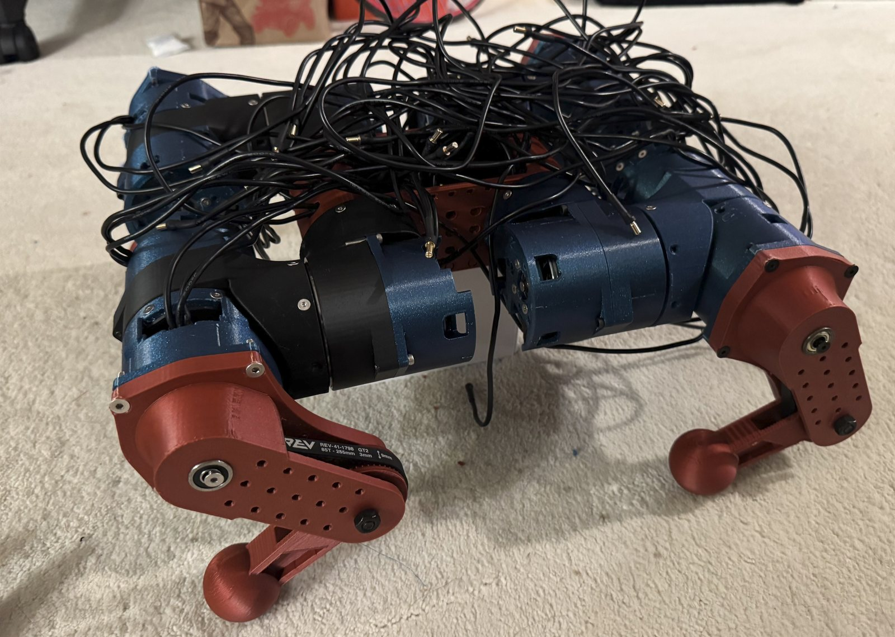
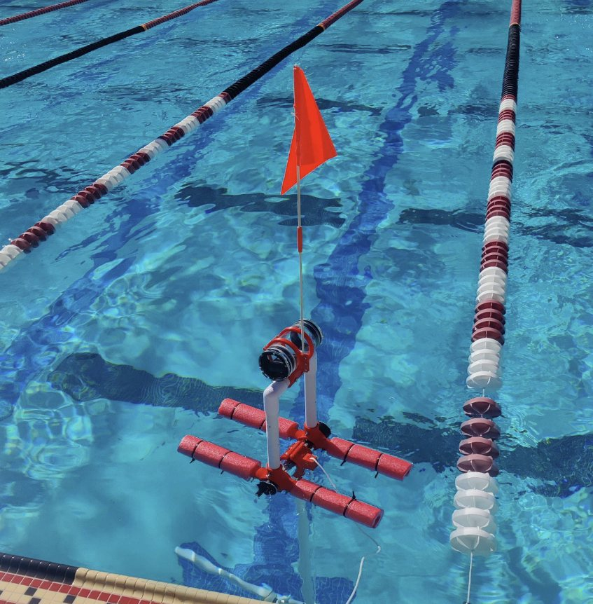

About
Hi! I'm Jacob Lynn and I am a sophomore (Class of 2029) studying mechanical engineering with a minor in comp sci at Stanford University. I also do research in the Stanford ARMLab where I work on electromagnetic robotic muscles for tendon-driven robot hands! I'm interested in robotics and space and I've always loved to create. My dream job would someday be to work on space robotics :). This website is meant to serve as a portfolio of what I have made in college so far! I hope you look around, and please reach out to me if you have any questions or thoughts: jnlynn@stanford.edu
- Education
- Stanford University — B.S. Mechanical Engineering, minor in Computer Science. Expected 2029.
- Research
- Stanford ARMLab (Assistive Robotics and Manipulation), April 2026 – present.
- Teams
- Stanford Student Space Institute: Europa (co-lead) and IREC Payload.
- Engineering
- CAD, CAM, FEA — Fusion 360, Onshape.
- Fabrication
- CNC machining, 3D printing, laser cutting, woodworking, carbon fiber and composite layups.
- Programming
- Python, JavaScript, Java, C, C++, ROS2.
Projects
-

P-01Limbed Robot Project
A generic framework for building limbed robots around one custom 5:1 QDD actuator, proven on a full-size 12-DoF robot dog.
-

P-02Europa — Benthic Lander
A low-cost, open source lander that collects sediment, water, DNA, and video from ocean trench depths of over 9000 m.
-
 P-03
P-03IREC — Payload
An L3 rocket payload that synthesizes crystals in microgravity for pharmaceutical testing, built to fit within a 1U CubeSat.